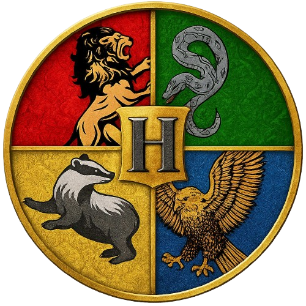

ხელოვნური ინტელექტი
ღრმა ცოდნა AI-ს საფუძვლებში, ალგორითმების შექმნასა და მონაცემთა ანალიზში.
მეტი ნახვაგააღე კარი მომავლისკენ, სადაც ცოდნა და მაგია ერთიანდება.
ღრმა ცოდნა AI-ს საფუძვლებში, ალგორითმების შექმნასა და მონაცემთა ანალიზში.
მეტი ნახვავიზუალური კოდირების პრინციპები ლოგიკური აზროვნებისთვის (ბავშვებისთვის).
მეტი ნახვაინტენსიური კურსი კომუნიკაციური უნარების გასაუმჯობესებლად.
მეტი ნახვაკურსი ფარავს კომპიუტერული სისტემების სტრუქტურასა და მონაცემთა ორგანიზაციის პრინციპებს.
მეტი ნახვაპროგრამირების საფუძვლები და პრაქტიკული გამოყენება ვებ-განვითარებაში.
მეტი ნახვააპლიკაციების განვითარება დესკტოპის, ვების და თამაშების (Unity) შესაქმნელად.
მეტი ნახვა